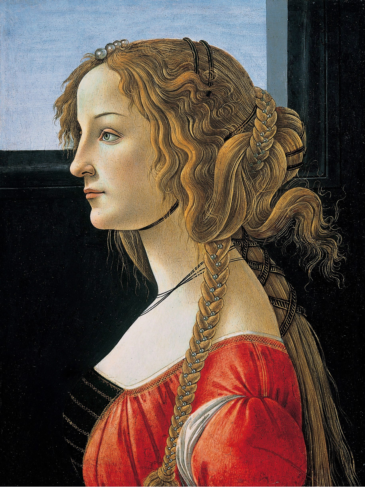
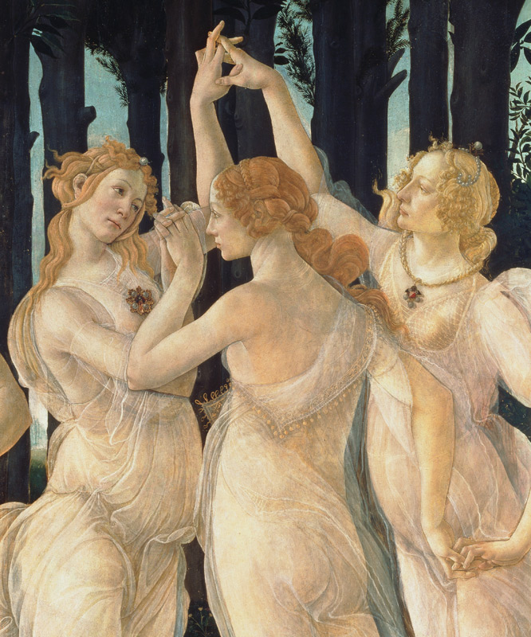
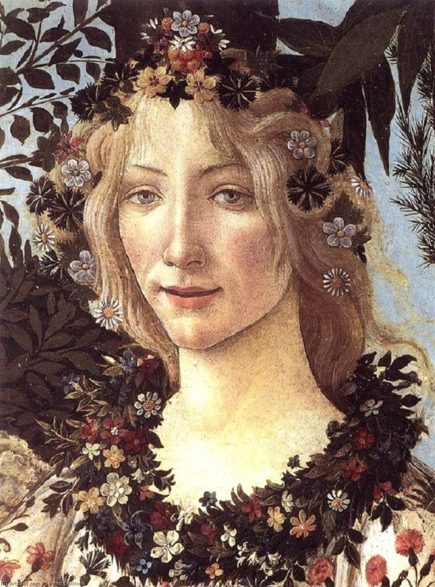
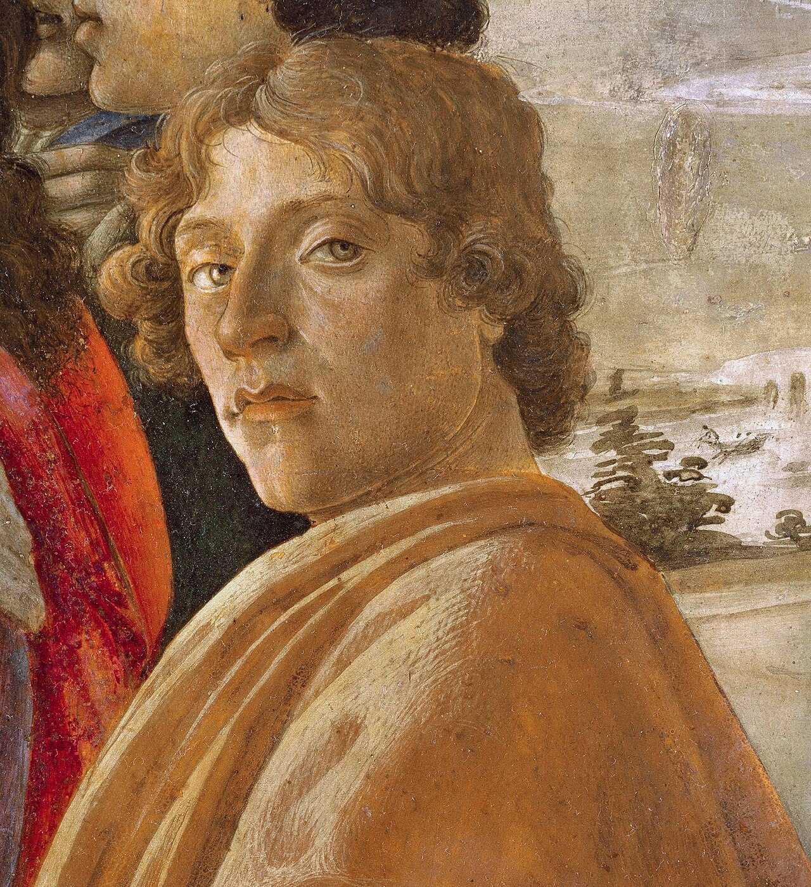
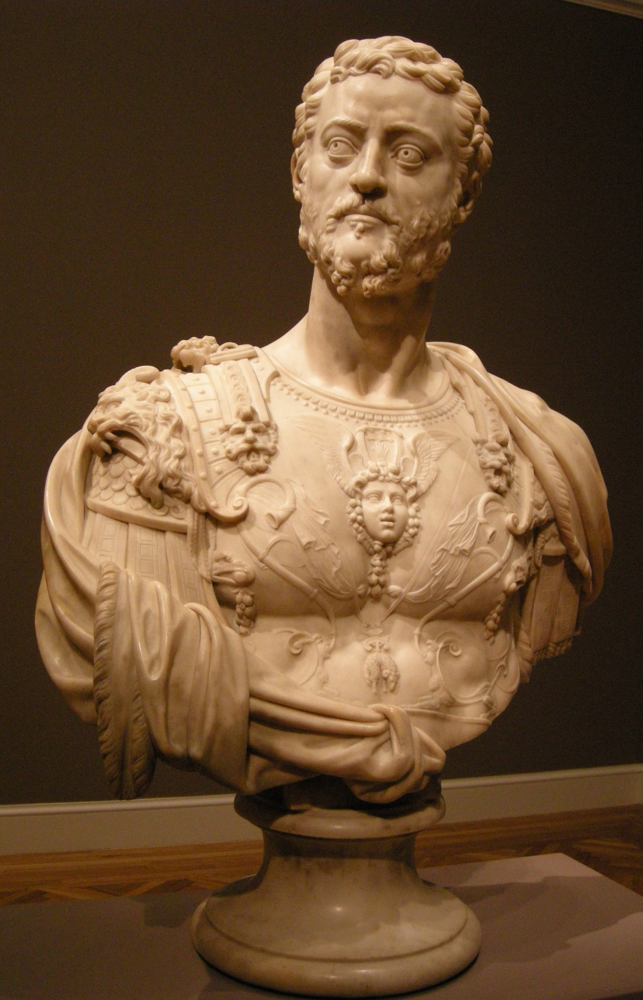
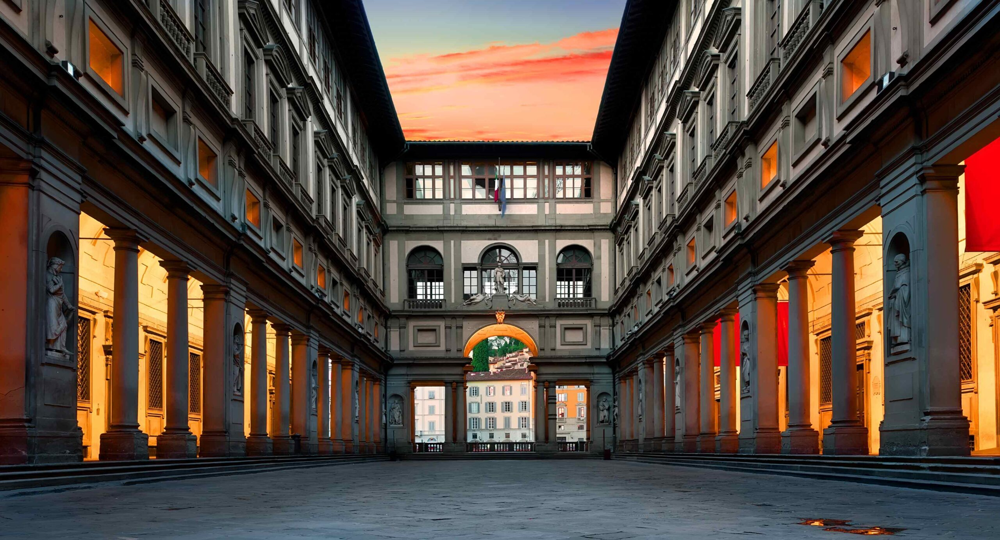
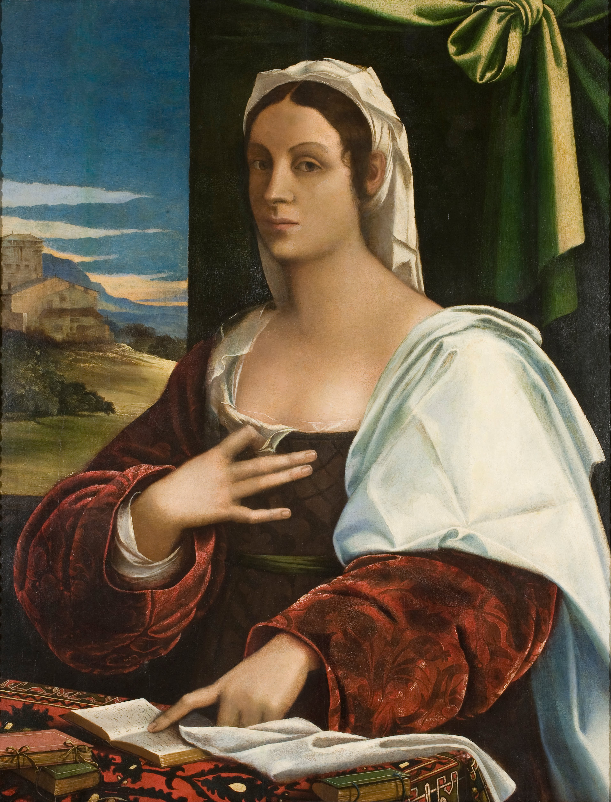

Capítulo 11
«Primavera»
El bello sueño de Sandro Botticelli
El nombre del pintor Sandro Botticelli lo conocen incluso quienes apenas se interesan por el arte. Sencillamente, está siempre en boca de todos. Y, por supuesto, es conocidísimo su cuadro La Primavera.
El destino de este cuadro, pintado en 1482 (juzguen ustedes: hace más de quinientos años), es extraordinario. Ha corrido la misma suerte trágica que la Venus de Milo, la Gioconda o el Cuadrado negro de Kazimir Malévich, porque lo han hecho trizas a base de citas. Lo han hecho trizas para calendarios, para pañuelos, para el diseño; lo han despiezado entero y elemento por elemento. Y los dos grandes cuadros de Sandro Botticelli, que son manifestación del más alto espíritu italiano del Quattrocento y del genio de este pintor romántico singular, se han convertido en el pop art glamuroso de nuestros días. Una popularización así puede aniquilar por completo una obra, pero, con toda probabilidad, ni la Gioconda, ni La Primavera, ni siquiera la Venus de Milo son susceptibles de semejante liquidación. Aunque, desde luego, el destino de estas obras es increíble. Porque Primavera es una obra de arte absolutamente elitista, muy refinada, que encierra una enorme cantidad de enigmas estilísticos. Se la ensalzó a comienzos del siglo XX: se hallaban en ella los fundamentos del estilo Liberty, es decir, del primer modernismo, y gran cantidad de matices decadentistas. Y de pronto es precisamente esta obra, junto con la Gioconda, la que se convierte en objeto de una agresión tan increíble. Aunque quizá esa agresión pueda entenderse en parte, porque el cuadro es bello en exceso, y si es bello en exceso, ¿por qué no ponerlo en una pantalla de lámpara, en un pañuelo o en una tacita? En resumen, el destino de este cuadro es insólito y ambiguo.
Volvamos a sus orígenes: a cómo se pintó, a qué le sirvió de base, a quién era Sandro Botticelli y a qué era su célebre Primavera en aquellos tiempos lejanos, en el último tercio del siglo XV. Sandro Botticelli (o, como se llamaba, Alessandro Filipepi) nació en 1445. Por nacimiento, por formación y por su vida fue florentino. Para figurarse lo que era Florencia en la segunda mitad del siglo XV no hay imaginación que baste, ni bastan nuestras ideas más audaces sobre aquella época en que una pequeña ciudad hervía de genialidad. No hubo poeta, ni escritor, ni pintor del Renacimiento de la segunda mitad del siglo XV que no pasara por la escuela florentina. Talleres de pintores, una vida en ebullición, una multitud de mercaderes forasteros, el comercio, las intrigas políticas… Y sobre todo ello reinaba la dinastía de los Médici. Los Médici no son simplemente el dinero ilustrado del mundo o un ejemplo de lo que es el dinero ilustrado en la cultura. Dinero ilustrado es cuando los banqueros y los empresarios hacían dinero para dárselo a quienes crean la inmortalidad. Ese dinero no iba a parar a los bolsillos de mediocres y granujas, sino que servía de base para crear el fondo de oro de la cultura universal, el oro de la inmortalidad, porque los propios Médici eran personas tan grandes como Botticelli, Miguel Ángel o Leonardo da Vinci, florentinos todos.

A lo que más se parece Florencia es al París del cambio de siglo: es el centro cultural y artístico del mundo, el centro de la genial bohemia artística europea. Y la vida que bullía en Florencia en el siglo XV equivale a la que bullía en Francia en el XIX, y sobre todo en el tránsito entre ambos siglos. Pintores de todas las tendencias, actores, políticos, bellezas, cortesanas, la comida, la guerra de ambiciones, las intrigas políticas, la vida y la muerte, el veneno y el puñal, el amor: todo hervía, todo rebosaba en esta pequeña copa.
Y Sandro Botticelli era uno de los verdaderos centros de la vida florentina, porque no solo era un gran pintor, sino también cortesano. Y no un cortesano cualquiera: era escenógrafo. Preparaba las representaciones teatrales de la casa Médici, decoraba las cacerías y los torneos; era encantador, cortés, adoraba a Lorenzo el Magnífico, era miembro de la Academia medicea, era prácticamente de la familia. Pero, más que nada, era amigo del hermano menor de Lorenzo el Magnífico, Giuliano de Médici. Todas estas personas quedaron en su obra y en sus retratos, tanto colectivos como del natural. En Noche de Reyes, de Shakespeare, se describen la corte del duque Orsino y su relación con Olivia, y todo ello corresponde exactamente a lo que ocurría en Florencia. Giuliano de Médici, como mandaban las leyes de la época, estaba perdidamente enamorado de una mujer encantadora. El amor estaba derramado por la ciudad, en la ciudad reinaba el amor, alguien tenía por fuerza que estar enamorado de alguien…, lo cual no quería decir que pasado mañana alguien no fuera a matar o a envenenar a alguien. El genio y la maldad coexistían, a la vez.

El hermano menor de Lorenzo el Magnífico, Giuliano, era amigo de Botticelli o, mejor dicho, Botticelli era amigo suyo. Es la misma amistad que se describe en Noche de Reyes, cuando Viola se hacía pasar por hombre y admiraba junto con Orsino la belleza de Olivia. Todos debían amar a la bella, y la primera belleza de Florencia era entonces una joven de Génova llamada Simonetta Cattaneo. Se casó con ella un pariente del navegante Américo Vespucio, y pasó a llamarse Simonetta Vespucci. Cuando su marido la llevó a Florencia, se convirtió en una verdadera estrella, en canon, en ideal de belleza. En su honor se celebraban torneos y cacerías, se le componían sonetos, todos la adoraban. Giuliano era su adorador oficial —platónico o no, eso ni siquiera importa—: sencillamente era su enamorado oficial. Y todos los demás suspiraban y decían: «¡Ay, qué belleza, qué diosa!». Lo mismo decía Botticelli.


Botticelli, al parecer, empezó ya entonces a pintar a esta Simonetta Cattaneo Vespucci. Ella estaba, en efecto, en el centro de todas las miradas, y si se observan los retratos de la época, muchísimas de las madonas que pintaban los artistas se le parecen: esas frentecitas abombadas, las cejitas finas y enarcadas, una expresión extraña en la que la ternura, el asombro y una especie de hipersensibilidad femenina se expresan con mucha fuerza. Ella era de verdad el centro de la vida cortesana, del servicio caballeresco típico de aquel tiempo. Desde luego, no todo se reducía a Simonetta Vespucci: había muchísimos talleres, muchísima política, muchísimo dinero, muchísimas aspiraciones diversas. Por ejemplo, la aspiración de los Médici de convocar el primer concilio ecuménico: a finales de los años cuarenta del siglo XV querían unir todas las iglesias, incluida la bizantina, y crear una asamblea eclesiástica ecuménica para ponerse a su cabeza. Querían un gran poder y comprendían muy bien que ese gran poder se alcanza a través de una gran genialidad. Existe esa imagen: Carlos V alcanzándole los pinceles a Tiziano. Pero, de no ser por Tiziano, nadie seguiría mencionando hoy a diario a Carlos V, para quien pintaba Tiziano. Fueran como fueran los Médici, los pintaban grandes artistas, y en Florencia se les servía. Sucedió algo insólito: los mecenas servían a los artistas, y los artistas creaban la inmortalidad para los mecenas y para las bellas damas.
Y así, hermosamente o quizá no tan hermosamente, a su modo dramática, transcurría esta vida. No duró mucho: Simonetta murió muy joven, a los veintinueve años, de una tisis vulgar. En materia de higiene, las cosas en Florencia no iban tan bien por diversas circunstancias de la vida cotidiana, pero, con todo, la bella dama tiene que ser forzosamente una estrella lejana. Hay versos dedicados a ella, y cuando la enterraron, el propio Lorenzo el Magnífico escribió versos. Durante el entierro, Lorenzo le señaló a su amigo una estrella lejana y le dijo que la difunta Simonetta había sido tan bella como aquella estrella.
Sin embargo, los acontecimientos dramáticos seguían su curso, y en 1478 ocurrió en Florencia un suceso muy extraño y muy grave. Unos tales Pazzi, uno de los linajes más nobles de Florencia, urdieron una conjura contra los Médici. Cuando estos, tras la misa, bajaban las gradas de Santa Maria del Fiore, es decir, de la catedral, los Pazzi quisieron matar allí mismo a Lorenzo de Médici, pero Giuliano cubrió a su hermano con su cuerpo. Antes de morir, según cuentan, pronunció en esas mismas gradas una especie de monólogo de despedida en el que dijo que por fin podía dar la vida por su hermano, por un gran hombre, cuando hasta entonces su vida había sido ociosa y vacía. Es difícil decir si fue así o no, pero hay noticias de ello. En general, sabemos poco de aquella época, y lo que sabemos es fragmentario. No hay que remitirse solo a Vasari: hay cronistas de costumbres más fiables que el hombre que escribió las vidas de los artistas del Renacimiento. Hay muchas otras fuentes, pero, en todo caso, lo que ahora contamos ocurrió sin duda. Y cuando ambos desaparecieron, cuando murió Simonetta y cuando pereció de modo tan romántico y dramático Giuliano de Médici, se convirtieron en verdaderos héroes para Botticelli. Se convirtieron en su sueño, en su obsesión, en sus héroes únicos e irrepetibles. Los pintó sin cesar. Y si en vida él era amigo de Giuliano y veneraba a Simonetta como dama de Giuliano, tras la muerte de ambos los papeles se invirtieron, y Simonetta pasó a ocupar el primer lugar en su obra.
Botticelli servía a la belleza femenina. Botticelli era un pintor romántico. No se parecía en absoluto a los demás pintores florentinos de su tiempo. No era solo discípulo de Filippo Lippi, que pintaba admirablemente madonas y las pintaba tomando por modelo a su mujer. Había en Botticelli un sentimiento particular de la feminidad y de la pérdida, y en eso quisiera detenerme. Es precisamente tras la muerte de Giuliano, en 1478, cuando pinta La Primavera. No solo cuando se había ido Simonetta, sino cuando se había ido también Giuliano. Para un poeta y un romántico esto tiene muchísima importancia. Sandro Botticelli fue el primer verdadero poeta romántico europeo, con el amor y la pérdida trágica del amor en el centro de su obra.
Se sabe que la obra de Botticelli se divide en dos partes. La primera, cuando era, por así decirlo, paje o amigo de su duque Giuliano; la segunda, cuando empezó a recordar, cuando se quedó sin ellos, cuando empezó a pintar estos cuadros, cuando pintó La Primavera. Era un verdadero poeta, porque para un poeta lo importante es el amor. Era un verdadero poeta, porque solo a través del poeta pasa una época, y le pasa trágicamente por encima. Solo un verdadero poeta siente la época como nadie. Los poetas están dotados de verdad de cierta intuición y de cierta hipersensibilidad, y nadie siente el tiempo mejor que un poeta. Por eso, quizá, Botticelli sigue siendo el único pintor que comprendió su tiempo de forma tan aguda, tan trágica, y lo expresó con obras de frontera, festivas, embriagadoras obras de ensueño y de sueño, como fueron Primavera y El nacimiento de Venus. Y después, el paso a cuadros como La abandonada, como Salomé con la cabeza de san Juan Bautista, como sus obras tardías, el Réquiem y el Santo Entierro. Fue, desde luego, el sensorio de su tiempo y un gran poeta romántico. Quizá no escribiera versos, pero fue un poeta romántico que se expresó en el arte.
La Primavera es una obra muy cargada de sentido. Es muy personal, porque está poblada de sombras amadas, queridas, inolvidables. Y no se parece a otros cuadros del Renacimiento, porque, en general, los pintores del Renacimiento son narradores: les encanta contar. Por supuesto, les sirven de asunto para sus cuadros las Sagradas Escrituras o el mito antiguo; al fin y al cabo, es el Renacimiento, para el que tanto significa la Antigüedad: los autores antiguos, el mito antiguo, el vivir dentro de la conciencia antigua.
Los italianos viven en la tierra de la Antigüedad; la sangre antigua nunca se ha ido de sus venas. Pero la cuestión es también, por supuesto, que viven muy intensamente la mitología bíblica: son cristianos, es un país católico. Por eso los pintores pintan lo uno y lo otro, pero lo pintan como hombres de la nueva época. Sus madonas han perdido el aspecto oriental, han perdido los ojos negros almendrados, el óvalo fino del rostro, los labios finos, las manos finas. Se han convertido en madonas que son musas de pintores y poetas: era un tiempo nuevo. Y por eso los pintores del Renacimiento contaban las viejas historias a la manera nueva. Eran verdaderos vanguardistas, porque descubrieron no solo el lenguaje de un arte nuevo, sino también nuevas formas de narrar. Se hacían a sí mismos héroes y partícipes de esta mitología, se sentían verdaderos héroes. No es casual que en 1504 se colocara en la plaza de Florencia el David de Miguel Ángel: señala lo que es el hombre del Renacimiento como héroe.
Botticelli es completamente distinto. En Botticelli no hay ese heroísmo. Botticelli es un pintor desheroizado. En él no hay nunca, en absoluto, sentimiento del músculo y de la victoria. Hay en él la imagen del amor y de la derrota. Primavera es de verdad un cuadro extraordinario, porque cuando lo ves en los Uffizi no das crédito a tus ojos, tal es su belleza. Son cuadros bellísimos, tanto El nacimiento de Venus como Primavera. No es casual que se hayan reproducido tanto, que se hayan multiplicado tanto: es una belleza para todos los tiempos. El siglo XX adora esta belleza, una belleza especial, algo herida. Primavera no está pintada como una narración. Los pintores del Renacimiento mostraban la dramaturgia de los acontecimientos, la interacción de los personajes; en Botticelli no hay nada de eso. Los personajes están como dispersos por el campo del cuadro, como repartidos en grupos que no se comunican en absoluto entre sí. Son como sombras en un bosque encantado, y ninguna de esas sombras toca a otra, aunque estén repartidas en grupos.
Existe la idea de que Primavera está pintada a partir de las Metamorfosis de Ovidio, pero existe también otra versión. El poeta Angelo Poliziano escribió el poema El torneo, en el que cantó el amor de Giuliano de Médici y Simonetta Vespucci. En El torneo nos contó toda esta historia, y no hace falta ningún Vasari, no hacen falta rumores ni habladurías: hay un poema en el que esta historia está descrita. Al poeta Angelo Poliziano le pertenece una especie de himno a los héroes del Renacimiento: somos hijos de la primavera, somos hijos de la primavera. En la palabra primavera no está solo el signo de la primavera como amor. Es como en los admirables versos de Ajmátova:
Es la unión del tema del amor, presente en este cuadro, con el tema de la primavera. Pero aquí hay también otro tema, el de Poliziano, que escribió el himno de los alfareros: somos hijos de la primavera, somos hijos de la primavera. Los hombres del Renacimiento se pensaban históricamente; su conciencia era completamente distinta de la de los hombres de la Edad Media. Y precisamente porque se pensaban históricamente, de pronto empezaron a escribirse cartas, empezaron a escribir memorias, recuerdos. ¡Basta pensar en las memorias de Benvenuto Cellini! No hablemos de cuánto mintió en ellas, pero escribió esas memorias. Se escribían, existe una correspondencia; empezaron a escribir, y a escribir muchísimo. ¿Y qué significa escribir? Escribir sobre uno mismo. Empezaron a tomar conciencia de sí, a tomar conciencia histórica de sí.
Es conocida la frase de Miguel Ángel, cuando hizo la tumba de los Médici y le dijeron que Giuliano no se parecía a sí mismo. ¿Qué respondió Miguel Ángel? Dijo: «¿Y quién sabrá dentro de cien años si se parece o no?». Dentro de cien, de quinientos años, ¿quién sabrá si se parece o no? Se veía a sí mismo dentro de cien años, y de doscientos, y de trescientos; se pensaba históricamente. Aquellos hombres se pensaban de otro modo, se veían en la historia, y no solo en la historia bíblica o en la historia antigua, heroica. Se veían como héroes de su propia historia y apuntalaban sus imágenes con la mitología, tanto cristiana como antigua. Así pues, los hijos de Primavera son los hijos de la primavera: es la vida que empieza de nuevo.
El cuadro Primavera admite varias lecturas completamente distintas. En general, siempre se lee de derecha a izquierda. A la derecha hay un grupo de tres figuras. Es el viento frío, Bóreas, que atrapa con las manos a la ninfa Cloe, y de la boca de la ninfa Cloe cuelga una ramita de lúpulo. Cuando uno se acerca al cuadro, le asombra que esa rama de lúpulo que tiene en la boca esté pintada como si el pintor la hubiera copiado de un atlas botánico: corresponde con total exactitud a la especie botánica. El lúpulo se cocía cuando todo florece; eso significaba que había llegado la primavera. Aparece esta primavera, estos hijos de un nuevo ciclo, hijos del tiempo nuevo, hijos de una nueva época, hijos de la primavera.
Botticelli pinta este cuadro como su sueño de la pérdida, repetido sin fin. Y lo pinta también como hombre de su tiempo. Todo este cuadro está pintado como no pintaban los artistas de su época. Y no se trata de que carezca de un contenido «cuadrado», es decir, de narratividad; es muy metafísico. Se trata de que el principio de organización artística del espacio es muy inusual. Está pintado de forma musical, rítmica; toda su estructura es musical y rítmica, o muy poética, y si uno mira el cuadro, toda la composición se lee de derecha a izquierda, como un tema musical. Tres figuras a la derecha, que forman un acorde. Dos juntas: el viento Bóreas y Cloe. Y la tercera nota, que se separa de ellas: Primavera, la Primavera. Pausa, cesura. Una figura aparte, completamente aparte, como una voz solitaria. Sobre ella reina Cupido, el pequeño dios despiadado, ciego, por supuesto. No sabe a quién ni cómo va a herir. Pero, al mismo tiempo, hay en ella tal fragilidad, algo tan aterido, que no se parece en absoluto a una Venus triunfante, sino más bien a una Madona, quizá a una Madona gótica. Y hace un gesto extraño con la mano, como un empujón, y es como si de ese empujón, todavía más a la izquierda, surgiera de pronto la célebre danza de las tres Gracias, que giran en ese bosque. Se las descifra según los tratados sobre el amor atribuidos al filósofo Pico della Mirandola: el amor es amor terrenal, amor celestial, amor-sabiduría. Y ninguno existe sin los otros. Estas tres Gracias están también enlazadas entre sí. El amor terrenal y el amor celestial, entrelazados, se oponen a la sabiduría; la sabiduría y el amor celestial se oponen al amor terrenal, y así sucesivamente. Representan esas combinaciones en el curso de la ronda, ni desenlazada ni cerrada: un acorde, otra vez tres notas, otra vez una cesura, y de pronto una figura masculina. Es la figura de Mercurio. Y si todas las figuras femeninas repiten una misma imagen inolvidable, la de Simonetta Vespucci, la figura de Mercurio reproduce sin duda a Giuliano de Médici. Es un tributo a su memoria y, a la vez, su inclusión en la elevada concepción filosófica de este cuadro.

Este cuadro está pintado de un modo asombroso, y no solo por su estructura métrica y rítmica, por ese acorde peculiar que podría prolongarse indefinidamente. Toda su composición se sostiene en el ritmo: no en el contenido narrativo, en el relato, sino justamente en aquello en que se sostienen la música y la poesía, el ritmo. Pero lo más asombroso, desde luego, es cómo pintaba Botticelli esos ropajes fluyentes, que se enroscan en ornamentos diversos, como si el agua resbalara por el cuerpo. Merece la pena fijarse en ello, porque el tema del cuerpo y del drapeado es tanto de la Antigüedad como de la Edad Media. Para la Antigüedad, el drapeado siempre subraya el principio sensual del cuerpo: nunca juega por sí solo, sino que subraya el movimiento, la fuerza, lo sensual y lo muscular. En la Edad Media, en cambio, esos drapeados, que abundan muchísimo, ocultan los cuerpos y los vuelven incorpóreos. Pero en Botticelli estas líneas fluyen en vertical, se enroscan, serpentean. Hacen lo que hace el drapeado antiguo, es decir, subrayan el cuerpo, y al mismo tiempo hacen lo que hacía el drapeado medieval, que en cierto modo anula el cuerpo, lo vuelve ajeno a los sentidos. Nunca pisan la tierra: flotan a un par de dedos del suelo. Son imágenes románticas extraordinariamente refinadas, hermosas, pintadas por un artista que está fuera de épocas y de pueblos. Botticelli era un pintor italiano, florentino, un pintor del Renacimiento del siglo XV. ¡Cómo pintaba la línea, cómo pintaba la música de la línea! No solo es imposible repetirlo: es imposible incluso describirlo con palabras. Con razón se ha escrito siempre de él que es un poeta insuperable de la línea. Por mucho que uno mire a las tres Gracias, esos drapeados transparentes, no se entiende en absoluto cómo están pintados, cómo están pintados esos cuerpos que tocan y no tocan la tierra, espectrales y llenos de un encanto femenino y sensual.
Y todo el espacio entre esas líneas, entre esos ritmos, está lleno de un ornamento divino de árboles. ¡Y qué interesante es la vida de esos árboles! Si miran de derecha a izquierda, verán que los árboles de la derecha están desnudos, no tienen nada, aún no han brotado, no tienen todavía ni hojas. Luego, allí donde aparece Flora, la primavera misma, empiezan a dar fruto, ya florecen. Y donde están la Madona (o Venus, aquí ya es difícil decirlo) y las tres Gracias, en los árboles hay de pronto, a la vez, flores de azahar —imagen de bodas, de amor— y grandes frutos anaranjados. Y he aquí la figura de la izquierda, la de Mercurio, envuelta en una capa. Lleva yelmo, ha alzado su vara mágica, el caduceo, y parece tocar los árboles, parece apagarlos. Se considera que aquí hay además un periodo de medio año, exactamente medio año: de marzo a septiembre. Marzo es cuando empieza a florecer el lúpulo, empieza la primavera y entra un nuevo ciclo de vida. Y cuando Mercurio toca el árbol con su vara, se apaga el verano, se apaga la estación del esplendor y llega el otoño. Mercurio apaga la floración en septiembre.

Pável Murátov escribió que el manto de Venus (o de la Virgen) y la túnica de Mercurio son del mismo color, y es verdad. La túnica está ornamentada con un dibujo menudísimo de antorchas apagadas, con la llama vuelta hacia abajo. Significa que ya no están, que se han ido.
En este cuadro, una altísima intuición, la sensibilidad, la obsesión artística, se unen a un gran intelectualismo. Es el intelectualismo de la construcción, el intelectualismo de la ejecución, y todo ello se une de manera muy orgánica. Igual que hay una dualidad de la sensación emocional, o una dualidad del principio emocional, está ese sentimiento de soledad en cada figura. Cada figura está muy sola, muy encerrada en sí misma. Ese estado de soledad absoluta, de abandono, no era un sentimiento del mundo propio del Renacimiento; era más bien propio de la naturaleza poética y muy sensible del propio Botticelli. Y en su mujer, en esta Simonetta Vespucci, y en sus personajes viven siempre a la vez dos sentimientos: el de la fuerza floreciente de la vida, del encanto femenino, y al mismo tiempo el presentimiento de la muerte. Como escribió Zabolotski sobre la Struiskaya: «presentimiento de tormentos mortales». Esta unión de lo uno con lo otro volvía estas imágenes especialmente atractivas, y sobre todo a comienzos del siglo XX. Es la unión de dos enigmas, como escribió Zabolotski:
Esto encaja muy bien con el estado ambivalente que nos transmite Botticelli y que tan inteligible resulta para los hombres del siglo XX. En general, la resonancia de Botticelli en la cultura del siglo XX es enorme. Su destino fue muy duro, porque tras la muerte de Lorenzo el Magnífico, ocurrida en 1496, y sobre todo tras la hoguera de Savonarola, en 1498, con toda probabilidad sencillamente enloqueció. Dicen que fue olvidado ya en vida. Lo lloró mucho Leonardo, que no se distinguía, por decirlo con suavidad, por una especial compasión hacia la gente. Contaba que iba por Florencia y vio una figura humana, semejante a un pájaro, tendida sobre una cerca de madera. No lograba entender a quién le recordaba, y pasó de largo. Y solo entonces cayó en la cuenta y escribió: «Pero si era mi Sandro». En esas palabras, «mi Sandro», están el amor y la ternura de Leonardo, que no le eran propios. A Botticelli lo quería todo el mundo: era un hombre muy agradable y bueno, dicho en lenguaje corriente, es decir, de trato cómodo, tolerante, y un pintor que no se parecía a nadie y que, al parecer, miraba muy lejos hacia delante.
En el arte del siglo XX hay un pintor al que podemos llamar, si no discípulo, sí seguidor muy profundo de Botticelli. El estilo de Botticelli, su imagen, asoman constantemente; están incluso en las canciones de Vertinski. Pero seguidor (él nunca lo dijo, pero en el fondo es así) solo tiene uno: Amedeo Modigliani. Las figuras de Amedeo Modigliani están muy próximas a las de Botticelli. Modigliani es italiano, florentino, formado en la Academia de Florencia. Conocía como nadie tanto las obras de Botticelli como sus ilustraciones para la Divina comedia. Pero no se trata de eso, sino de que Modigliani, igual que Botticelli, es un gran poeta de la línea. Sus figuras no están simplemente contorneadas: la forma se crea, por así decirlo, a través de la línea. Es una línea que fluye hacia abajo y crea un ritmo determinado de la vida de la forma. Y no solo tiene esa magia del ritmo tan característica de Botticelli, no solo cierto sentido de la musicalidad, sino que incluso por su estado interior está muy cerca de él. Esos ojos suyos sin pupilas, esos cuellos largos y estirados, los hombros caídos: ¡cómo recuerdan a Simonetta…! Y, sobre todo, en todas sus obras está la misma entonación de soledad profunda y absoluta propia de Botticelli. De algún modo lo sentía, como gran artista: esa sensualidad, esa supersensualidad, esa soledad y algo más. Es una voz solitaria. Incluso por su disposición emocional, por su mundo emocional, está extraordinariamente cerca de Botticelli. Nunca se le ha prestado a esto la atención suficiente, pero es así. Modigliani es un auténtico seguidor de Botticelli, consciente o inconsciente: es difícil juzgarlo. Los artistas no siempre nombran a sus padres.
Botticelli nos dejó un autorretrato muy interesante. Pintó un cuadro titulado La adoración de los Magos. En él, el punto de fuga converge en el lugar llamado pesebre o portal. Allí está sentada en un trono la Virgen con el Niño (en sus rasgos reconocemos, por supuesto, a la misma Simonetta), y de pie está José. A derecha e izquierda se disponen los miembros de la familia Médici. A la derecha, Lorenzo y su corte; a la izquierda, Giuliano y la suya. Los reconocemos: reconocemos al viejo Cosme, e incluso a su antepasado Giovanni di Bicci, reconocemos a los héroes de la Academia medicea. Vemos a estas personas, y en el extremo derecho del cuadro hay un hombre con toga amarilla, con manto amarillo, de cuerpo entero, de arriba abajo. Está en el borde mismo del cuadro y nos mira. Es prácticamente la única figura que se vuelve hacia nosotros, que nos mira: es el autorretrato de Sandro Botticelli. Nos mira porque en él se unen nuestros siglos, que pasan de largo. En realidad, es el autorretrato de cualquier artista. Todo artista, de un modo u otro, nos une a nosotros, los espectadores, con su tiempo, nos hace partícipes de su época. Crea nuestra memoria y crea su inmortalidad, y de paso también la nuestra.

El autorretrato de Botticelli es una obra excepcional precisamente porque es un autorretrato dentro del cuadro. Al fin y al cabo, entonces, a mediados del siglo XV, colocar el propio autorretrato dentro de un cuadro, o incluso hacerlo por separado, no era todavía una práctica extendida. Era una gran rareza. La necesidad del autorretrato surge algo más tarde, y este es uno de los primeros y más detallados. Es un autorretrato de cuerpo entero, no de busto ni de perfil. Es detallado porque Botticelli se examina a sí mismo como individuo, con distancia, como si reflexionara sobre sí: quién es él aquí y para qué está aquí. Se muestra, por un lado, dentro de un cuadro muy concreto, La adoración de los Magos. Y ahí está la familia Médici: muestra que formaba parte de ella. Está inscrito en la zona donde aparecen los retratos de la Academia medicea. Allí están el propio Bramante, Poliziano, allí hay retratos de contemporáneos, y allí se representa a sí mismo. Es decir, se muestra en la familia, en la Academia medicea, porque siempre se sentaban, por así decirlo, a la misma mesa. Dice: «He vivido, aquí estoy, yo, Sandro Botticelli; fui miembro de esta familia, fui miembro de este grupo, fui cortesano de los Médici, fui amigo de los Médici, fui miembro de la Academia medicea. Lo fui y no lo fui. Lo fui solo en parte. Pero en realidad soy un puente». ¿Por qué decimos «un puente sobre el abismo»? He aquí el retrato de un hombre que se siente ese puente tendido sobre el abismo: un puente que une dos cosmos. Porque nos mira, porque pasan los siglos y nosotros pasamos ante este cuadro.

Este cuadro estuvo hace poco en una gran exposición del Louvre dedicada a la casa Médici. Allí se presentó La adoración de los Magos: cuando uno mira el autorretrato de Botticelli, asombra con qué relieve se integra en la composición de conjunto —los amigos de la Academia, la familia— y, a la vez, cómo se separa de todo ello en la parte inferior derecha. Y cómo nos mira: se dirige solo a nosotros; es un hombre con conciencia histórica. A través de él pasará el tiempo. Es un gran autorretrato, que da testimonio de una inteligencia profundísima, de una conciencia profundísima de su misión, y de que es un hombre que se piensa históricamente, a distancia de sí mismo. ¿A quién más representa el cuadro, además del pintor? En la parte izquierda está Giuliano, de pie, adelantando un poco la pierna; aparece bajo de estatura, de complexión frágil. A la derecha está Lorenzo, y se le ve muy bien. Hay además dos personas junto al trono de la Virgen, probablemente antepasados de la casa Médici: allí están representados Cosme y Giovanni di Bicci, fundador de la casa bancaria. Era la costumbre de entonces: los pintores representaban a las personas de su entorno presente y a las que constituían la historia de esa casa. En cuanto a los miembros de la Academia representados en el cuadro, no todos han sido identificados.
De este autorretrato hay que decir además algo muy importante. Sandro Botticelli está a la vez dentro de la corte de los Médici —es cortesano, está entre los cortesanos— y fuera de ella. ¡Con qué exactitud es consciente de esta doble posición! El artista está dentro de su mundo, se piensa como amigo, como parte de ese mundo, y a la vez comprende perfectamente que está fuera de él, que es un puente sobre el abismo. Aquí conviene reparar en cuántas veces a lo largo del siglo XV, el Quattrocento, se pintó en Florencia el tema de la adoración de los Magos. No hubo pintor, ni escultor, nadie que no hiciera una Adoración de los Magos. El tema se prolongaba hasta el infinito; no puede dejar de prolongarse; se prolonga todavía hoy. Cómo Gaspar, Melchor y Baltasar, los tres grandes Magos, llegaron los primeros, aunque después de los pastores, al pesebre. Llegaron a traer presentes al Niño, a ofrecerle oro y el bálsamo de la eternidad, un ungüento, una pomada. En la Florencia del siglo XV los pintores representan a menudo este asunto; es una especie de lugar común, cada uno tiene que hacerlo. Hay indicios de que los Médici fundaron cierta organización, a la que pertenecían ellos y algunos iniciados, llamada «orden de los Magos». Precisamente orden de los Magos, porque se sentían Magos. Los Magos son los primeros que vinieron a anunciar una nueva época, un tiempo nuevo. Ya hemos dicho que se sentían históricamente, que fueron los primeros hombres con un pensamiento histórico consciente, y de verdad vinieron a anunciar una nueva época. Con ellos empezó la Edad Moderna.
Entre los dos cuadros, Primavera y El nacimiento de Venus, hay desde luego un vínculo muy estrecho, aunque solo sea porque se concibieron como un díptico: en la idea del pintor, uno era como la continuación del otro. Primero reciben a Venus —Flora en la orilla—, ella sale de la concha, y después empieza el tema de la primavera. Pero no se trata de cuál de los dos es más conocido, sino de que toda la plenitud de pensamientos filosóficos, poéticos, artísticos, y de otros pensamientos muy propios, interiores e íntimos, se despliega con más amplitud en Primavera que en El nacimiento de Venus. En Primavera vemos de golpe gran cantidad de estratos. Hay una nota muy íntima, muy honda. El tema del amor —tan importante para Italia en general, importante para el Trecento, importantísimo para el Quattrocento (es decir, para el siglo XV), importantísimo para toda la filosofía de los Médici, de su corte, de la época— tiene sus etapas. Si tomamos la concepción franciscana del amor, le corresponde más bien el tema de la fraternidad —«tú eres mi hermano»—, el del vínculo entre las personas, de la hermandad humana, y el de la comprensión. En cambio, refractado en las ideas del Quattrocento, o del siglo XV, es más bien el tema del amor sensual, del amor a la bella dama, del amor entre hombre y mujer. Es, en general, un amor que todo lo absorbe y que tiene todos los matices: el platónico, el de la soledad, el sensual y el de la unión. Pues bien, en La Primavera están precisamente todos esos matices. Era el tema dominante en la corte de los Médici, en cualquier corte caballeresca, en una cultura que glorificaba a la bella dama y donde la idea de la bella dama estaba ligada precisamente al nombre de Simonetta Vespucci, al de Giuliano o Lorenzo de Médici, al de Angelo Poliziano, que escribe el poema El torneo. Y está ligada con igual precisión al nombre de Botticelli, para quien ambos nombres eran entrañables.
Giuliano de Médici, hermano menor de Lorenzo el Magnífico, era el caballero ideal de su tiempo, según lo describen los historiadores y según lo describe la fama. Nunca armaba escándalos, no andaba en dimes y diretes con su hermano, no se disputaba nada con él; era un hermano excelente y un caballero ideal. Desempeñaba en la corte de Lorenzo el Magnífico la función que ni el propio Lorenzo ni otras muchas personas podían desempeñar, porque estaban ocupadas en la política y los negocios, mientras que él era la juventud dorada. Sus ocupaciones eran las cacerías, los torneos, las fiestas, el amor. Se parecía mucho, como ya hemos dicho, al duque Orsino de Noche de Reyes: era un joven de ese mismo tipo. En cuanto a Lorenzo el Magnífico, puede afirmarse con certeza que fue una personalidad de la misma talla que Botticelli, Leonardo, Miguel Ángel, Rafael, Bramante o Carpaccio: una personalidad gigantesca del Renacimiento, un genio de su tiempo. Era el gestor y organizador de todo este proceso, su mecanismo; sin él, la interacción de todas esas partes habría sido sencillamente imposible. Hoy nos resulta muy difícil siquiera comprender qué fue aquello. Porque nadie puede respondernos a esa pregunta; los libros no responden a estas preguntas: ni qué fue aquello ni de dónde salió. Pero sabemos con certeza que una de las causas más serias del surgimiento del Renacimiento es el dinero ilustrado, es decir, el dinero invertido en el genio. Lo describe admirablemente Bulgákov cuando, en El maestro y Margarita, pone en boca de su personaje: «¡Si me recuerdan a mí, te recordarán en seguida también a ti!». A ellos los recordarán, y a él lo recordarán. Es lo mismo que Carlos V alcanzándole los pinceles a Tiziano: él le alcanza los pinceles a Tiziano, Tiziano será quien lo recuerde, y nosotros lo recordaremos tantas veces como veamos los cuadros de Tiziano. Eran personas que sabían que su inmortalidad dependía de ese genio, de esa realización, y en eso consistía su propia genialidad. No le dolía invertir dinero en la inmortalidad: cambiaba dinero por inmortalidad.
Dicho así suena algo vulgar; todo era más sutil, porque la época estaba cargada de polaridad. En general, nada es nunca unívoco. Sí, Lorenzo era él mismo un poeta de talento, una naturaleza artística muy dotada y refinada. Sí, la Academia y aquellas personas le hacían falta no solo porque cambiara su dinero por inmortalidad: él formaba parte de ese ambiente. Aportaba a ese ambiente su grano de arena. Pero así era también su padre, llamado Piero el Gotoso, que murió muy pronto de gota, mal que, por cierto, padecía también Lorenzo. Y así era su abuelo Cosme. Piero el Gotoso estuvo muy poco tiempo al frente de la casa Médici, y Lorenzo el Magnífico tomó el relevo de su abuelo, no menos genial, llamado Cosme, y de su bisabuelo, padre de Cosme, no menos genial tampoco. Era una dinastía que usurpó el poder en Florencia —por suerte para la época y para la ciudad—, y Lorenzo fue quizá la personalidad más brillante, la cumbre. Pero de toda la dinastía de los Médici (al fin y al cabo, León X fue papa) no puede decirse que se limitaran a comprar cargos o a hacer carrera. Eran personas dotadas, incluida la rama colateral que llega más tarde al poder. Cosme continuó la línea de Lorenzo, solo que ya en el siglo XVI, en condiciones distintas. No hay que olvidar que Vasari, que nos dejó la primera gran obra de conjunto, genial, las vidas de los artistas ilustres, era también pintor: en el Bargello pueden verse sus frescos, y construyó la calle en que se encuentra la Galería de los Uffizi. Aquella época continuaba. Aquí se mezclaban la personalidad, la tradición ligada a las tradiciones familiares y, desde luego, la época, que hacía de argamasa; todo ello, mezclado, creaba un material artístico espléndido y sólido que hoy llamamos historia del arte, cultura.
¿Y qué clase de persona era Simonetta? Nadie lo sabe. Costó mucho establecer su identidad: que era de Génova y que se casó con ella un sobrino o un hijo de Américo Vespucio, el navegante. Se sabe que era una mujer de belleza extraordinaria y que fue la bella dama de Florencia. No era sujeto, sino objeto. Y cabe añadir, remitiéndonos de nuevo a Shakespeare: en Otelo y en muchísimas otras obras suyas está admirablemente expresada esta actitud renacentista hacia la mujer, igual que en Noche de Reyes, donde Olivia es objeto de adoración. La mujer es objeto de adoración, pero permanece cerrada para ellos: conocer el mundo interior de la mujer no entra en las tradiciones de la época. Hay admiración, hay deseo, pero en absoluto conocimiento. A Otelo no le inquieta lo más mínimo el mundo interior de Desdémona; no la comprende en absoluto. Se engaña todo el tiempo. Se engaña con Yago solo porque Yago es una función: es su ayudante de campo, dormía con él en la tienda, es su guardián, vela su sueño. Sospechar algo de una persona que cumple esa función es sencillamente imposible, jamás se le pasaría por la cabeza. Y quién es Desdémona para él lo explica muy bien en su monólogo: amada, hija, solaz; pero no le interesa en absoluto qué hay dentro de ese cofrecillo. No: le interesa su función, su forma externa. Evidentemente, ese era el sistema de relaciones. Aunque, desde luego, hubo mujeres asombrosas, como Vittoria Colonna, el único amor de Miguel Ángel, gran poeta, mujer muy inteligente. Se conserva la correspondencia entre Miguel Ángel y Vittoria Colonna. Así pues, fue una gran mujer de su tiempo, extraordinariamente inteligente. Estaba la madre del propio Lorenzo el Magnífico; sabemos de ella porque se conservan sus cartas al padre de Lorenzo, el Gotoso, y esas cartas están publicadas. Se conservan las cartas que escribió cuando fue a Roma, por ejemplo, a escoger novia para Lorenzo el Magnífico. Trata con él por carta asuntos de familia, los hijos, cómo elige a la novia, cómo ve a esas mujeres, y se comprende que es una persona muy honda e inteligente. Pero no creo que la cultura misma se ocupara de esas cualidades femeninas; le importaban otras cosas. Se ve también en Tiziano: los hombres son personalidades; las mujeres, bellezas, Venus.

Por lo demás, la muerte por tisis era un fenómeno muy extendido. Cuando se lee a Burckhardt, su admirable libro La cultura del Renacimiento en Italia, toda esta época aparece bajo una luz algo distinta. Por ejemplo, cómo se lavaban, a qué nivel estaba su higiene, qué pesados eran sus vestidos, cuántas veces se cambiaban las camisas que llevaban bajo los pesados vestidos femeninos y los jubones masculinos, cómo se cuidaban. La higiene no era el punto fuerte de aquel tiempo; todo estaba bastante descuidado.
Pero lo más desagradable, en materia de higiene, era la vajilla. Comían en una vajilla que se lavaba muy mal, que era difícil lavar bien. Muy a menudo bebían todos de una misma copa. Y la gente de esta época, por desgracia, padecía enfermedades venéreas e infecciosas, y casi todas las bellas damas, las más bellas, una Laura cualquiera o Simonetta Vespucci, acababan contrayendo la tisis o cualquier otra porquería. Nosotros vemos el salón de recibir del Renacimiento, vemos la cultura subida al coturno; no la miramos desde el otro lado, no nos asomamos a su interior: a qué nivel estaba la medicina, a qué nivel la higiene, cómo lavaban la vajilla, cada cuánto se cambiaban de camisa, cada cuánto se bañaban, etcétera. Por eso es cosa del todo corriente que esta bella dama contrajera en alguna parte la tisis, o quizá no la tisis sino alguna otra enfermedad, transmitida por sus hombres, que en general eran muy poco escrupulosos e iban de campaña en campaña, de tienda en tienda: ese aspecto era complicado. Mejor no tocarlo.

¿Estaba Botticelli enamorado de ella como mujer? Para el arte no tiene la menor importancia, y es una pregunta muy difícil de responder. ¿Cómo podría saberse? ¿Estás enamorado de ella como mujer o como de un sueño, de una idea? ¿Cómo puede discutirse eso? Y si uno está enamorado de ella como mujer, ¿implica eso forzosamente deseo de posesión? No es casual que aquella época distinguiera muy bien dos cosas: el amor terrenal y el amor celestial. Tiziano tiene incluso un cuadro, Amor sacro y amor profano. Y es, al fin y al cabo, la misma modelo la que posa para Tiziano. Solo que en la primera figura aparece vestida y presentada como el amor terrenal, excesivo, lujosamente ataviado, y en la segunda como el amor celestial, sereno, de vestido blanco y rostro imperturbable. Eso son el amor terrenal y el amor celestial: un mismo rostro, solo que visto de dos maneras. Pero el amor terrenal puede ser también una muchacha de la calle, de cuyos servicios también se valían. Tenían también, sin más, relaciones con hombres… ¿qué más da? Lo único que importa es a qué equivale el resultado de esas vivencias, platónicas o sensuales. Ella fue su musa, espoleó su genialidad, y eso es lo principal.
La certeza en estas cuestiones no hace ninguna falta. Sabemos, sin más, que en vida de Giuliano, antes de la conjura (ella murió dos años antes), él estaba enamorado de ella, y que eso se exhibía, formaba parte de la cultura, de la tradición. Ella se sentaba en el torneo, los contendientes vestían sus colores, el séquito de Giuliano vestía sus colores, y él decía: «¡Mirad qué bella es!». Y todos decían: «¡Oh, qué bella es! ¡Es la mujer más bella del mundo, es una diosa!». Todos tenían la obligación de estar enamorados de ella, porque eran amigos o vasallos del príncipe. No es descartable que alguno lo estuviera de veras. Pero, como poeta elevado, como pintor refinado, con toda probabilidad Botticelli experimentaba un sentimiento mucho más hondo. La impresión que ella le causaba debía de ser extraordinariamente intensa. Por eso, tras su muerte, ocupa todo su espacio interior, se instala en él por completo y se convierte en objeto de su sueño para el resto de su vida. Así es este fenómeno del amor.
¿La pintó antes de que muriera? Es difícil responder. A veces, al pie de cuadros de Filippino Lippi, se plantea la pregunta: ¿es Botticelli o es Filippino Lippi? Ghirlandaio pintó un gran fresco relacionado con la familia Tornabuoni; parte de ese fresco está en el Louvre, y al pie pone Botticelli, pero no es Botticelli, es Ghirlandaio. Y a veces se atribuye a Botticelli lo que es de Ghirlandaio. Se produce así un desplazamiento: con el nombre de Botticelli se firma a toda una serie de otros pintores. Llevan el nombre de Botticelli cuadros que él no pintó. Y no porque se falsifiquen, sino porque es difícil establecer la autoría exacta. Eran talleres, eran encargos; pero lo interesante es que el tipo femenino se repite, es uno y el mismo.
Da la impresión de que Filippino Lippi la pintaba a ella, o a alguna otra. Es la bella dama de su tiempo: espeso cabello dorado adornado con joyas, frente abombada y depilada, nariz algo respingona, barbilla afilada, mejillas levemente hundidas, enormes ojos azules, hombros caídos, una melancolía pensativa en la mirada y, al mismo tiempo, un aspecto extraordinariamente seductor, sensual. Cada época nos propone su tipo de belleza. Hoy las llamamos con la palabra «estrella». No hace falta ir lejos a buscar ejemplos: en el cine estuvo muy de moda el tipo de Marina Ladínina, o de Marilyn Monroe, o de Greta Garbo; todas querían parecerse a ellas. La mujer renuncia a sí misma, quiere ser como Marilyn, rubia y de gran busto: eso es lo que se lleva, eso está de moda. Y siempre fue así. Cada época tuvo sus estrellas, su tipo de belleza, encarnado en un prototipo. Pues bien, ese prototipo fue o Simonetta Vespucci, que encajaba en él con toda exactitud, o alguna otra mujer vinculada a la casa de los Lippi. Pero era un tipo reconocido como el de la mujer bella y a la moda. Porque en toda época ha existido y existe siempre un tipo así. ¿Puede decirse que ella poseía cualidades excepcionales? Sí, a juzgar por todo, así es, pero hay aquí también un elemento de moda de ese físico: o la emoción que suscita esa imagen, o su correspondencia con ciertas normas estéticas de la época. Es un conjunto de rasgos. Así ocurrió en el mundo antiguo, donde hubo heteras célebres a las que se imitaba; así en la Edad Media; así en el siglo XVIII, con alguna madame de Pompadour que era el canon, y todas imitaban su tacón, su estatura, su peinado. Es natural. O cuando Tiziano puso de moda a su hija Lavinia, que se convirtió en el ideal de la belleza veneciana: sencillamente coincidía con ese tipo. Es una respuesta muy banal, pero así eran las cosas.
Tras su muerte, Simonetta se convierte en la bella dama de Botticelli. Y en toda su plenitud, en su explicitud —esto es una ensoñación, es un sueño, ellos ya no están, se fueron hace mucho, se encarnan en el sueño, pero la vida en el sueño, ese sueño suyo, puede plasmarla en los lienzos—, ambos cuadros son bellos. Sobre todo El nacimiento de Venus, donde ella está de pie, tocando la concha con la punta de los pies, y ondea su cabello dorado. Es un fragmento del cuadro que por sí solo se convierte en un cuadro aparte y se reproduce infinidad de veces. En Primavera, en cambio, es una imagen fragmentada en espejos, lo que se dice «reflejada en todos los espejos». En el espejo de Cloe, que huye de Bóreas con esa flor de lúpulo entre los dientes. Y en Flora, que llega y se convierte en la Primavera, que con su vestido parece un pájaro matinal. Entra en este mundo con el vestido tejido de flores, esparce flores desde su regazo, y esas flores se convierten en las flores de la tierra. Y lo más interesante: puesto que Cloe corre con una ramita de lúpulo, la primavera es embriagadora, y el tema de la primavera está ligado al del lúpulo que se cuece y al de la embriaguez que corre por la sangre. Por eso tiene rostro de sonámbula, ojos un poco ebrios, flotantes; una sonrisa extraña, indefinida, le resbala por la cara, y esas manos, esas piernecitas algo torcidas... Hay en ella tal abismo de feminidad, de encanto, de seducción, que ningún otro pintor, ni antiguo ni moderno, ha logrado entregárnoslo con tal plenitud. La figura central, que se distingue por una timidez y un aire aterido particulares —ya Madona, ya Venus, ya la Virgen—, sobre cuya cabeza planea Cupido, con ese gesto extraño, lánguido y tímido; y, desde luego, las tres Gracias, que de algún modo desarrollan el tema de Flora. Solo que Flora entra en el trío de figuras por la derecha, y la Madona por la izquierda. Y ahí están, figuras incorpóreas y corpóreas, ajenas a los sentidos y sensuales y, como dirían los cineastas de hoy, supersensuales. Figuras en las que la sensualidad parece haber desaparecido, pero se manifiesta con la mayor plenitud, de modo inaprensible. Es increíble; solo Botticelli podía hacerlo, y es imposible explicarlo o describirlo, ni los tejidos que fluyen ni el dominio de la línea. ¿Acaso puede describirse el soplo del genio? No.
En El nacimiento de Venus, en la composición misma, hay cierta rigidez, una división en mitad derecha y mitad izquierda: la concha sobre la que ella está y un bosque convencional, como un decorado de las representaciones que montaba Botticelli, con esa hada, diosa del bosque, que sale de él con un manto que quiere echar sobre los hombros de Venus. Ahí la composición está dividida con cierta rigidez, es algo angulosa. En cambio, toda la composición de Primavera es música pura, sencillamente música. Como música se percibe su división en grupos: tres-uno, tres-uno, como si uno tuviera delante un pentagrama. Música en los drapeados. En los drapeados, en general, siempre hay música. Ya lo sabían los griegos, y por eso trabajaban el drapeado como una forma músico-plástica, en la que música y plástica se unen. Por eso el tema filosófico neoplatónico del amor, toda la embriaguez de la corte de Lorenzo de Médici y el sueño trágico de Botticelli de captar el mundo del otro lado del espejo solo se expresan plenamente, desde luego, en Primavera.
¿Qué música está a la altura de la que suena en La Primavera? En primer lugar, la que ellos mismos interpretaban. Sus conciertos aparecen en cuadros de muchísimos pintores. Por ejemplo, en la Natividad de Piero della Francesca se ve una pequeña orquesta. Estas orquestas aparecen en cuadros de pintores venecianos, en ese mismo cuadro, El concierto. En muchísimos cuadros se muestran estos conciertos. ¿Qué música de concierto era aquella? El tiempo de los grandes compositores aún no había llegado. Si el tiempo de los grandes compositores en el arte, es decir, de los grandes maestros de las grandes composiciones sinfónicas en la pintura, llega en los siglos XIII y XIV, la verdadera música orquestal, de concierto, aparece en el siglo XVI en Venecia: ese es el país de la música. De grandes músicos de verdad en tiempos de Botticelli no hay gran cosa que decir. Pero los instrumentos que tocaban, cómo se sentaban y cómo interpretaban, todo ello nos permite hacernos cierta idea de la música que tocaban. Tocaban instrumentos que hoy solo sobreviven, si acaso, en conjuntos de música antigua. Por ejemplo, un instrumento llamado viola: viola d'amore, viola da gamba. La viola es un violonchelo muy pequeño o un violín muy, muy grande, que se apoyaba delante de las piernas. Tenía un timbre peculiar, agudo y de pecho, muy tierno; un sonido muy dulce. Y tocaban hermosos instrumentos de viento, sobre todo de sonido aflautado. Probablemente, esa combinación de cuerdas delicadas y vientos creaba una música así, triste y dulce. Seguramente sonaría de maravilla, si se pudiera encontrar. Sería hermoso restaurar esa música y ofrecerla como acompañamiento de estos cuadros. El autor tuvo ocasión de asistir en París a un concierto en las salas del Museo Marmottan-Monet, en las salas de los impresionistas, en el que una orquesta interpretaba a Ravel y Debussy, música impresionista. Fue asombroso: los cuadros empezaban a cantar, a sonar y a respirar de otro modo. Y sería maravilloso reproducir la música que Botticelli oía y que le guiaba cuando pintaba estos cuadros.
Su obra, en general, es extraordinariamente desigual. Causa una impresión enorme la Piedad, uno de sus cuadros tardíos. Por la reproducción no se entiende que esté pintada con tanta belleza, que sea tan perfecta de forma y, al mismo tiempo, tan trágica y tan cargada de energía. Un cuerpo quebrado, tan joven, pero partido en dos… Ya sea el llanto por un joven dios muerto, ya por Lorenzo, ya por Giuliano, ya el llanto por aquel tiempo que lo había sido todo para él —su vida, su aliento, su amistad, su amor—, ya el llanto por Savonarola, ese loco… Es un llanto universal, un sollozo común, y la energía de este cuadro es poderosísima, mucho mayor que en otras obras suyas, como La calumnia o San Zenobio. Es un cuadro muy poderoso, como La abandonada: una figura sentada en unos escalones ante unas puertas cerradas. Y se acabó: la vida ha terminado, han cerrado las puertas, y un retazo de cielo azul allí, tras el muro. Nunca más se abrirán las puertas, nunca más volverá nada. Es un final muy trágico. Y, con todo, de todos sus cuadros, probablemente es La Primavera el que produce la impresión más poderosa y profunda. En el arte es muy importante haberlo dicho todo y no haber dicho nada. Botticelli lo dijo todo en este cuadro. Mostró esa figura de Mercurio, mostró ese tramo del tiempo activo de la naturaleza —medio año—, cuando todo empieza en marzo y termina en septiembre, cuando los árboles apenas empiezan a florecer y ya todo cae, ya Mercurio apaga su floración. ¡Ahí está todo! Y, a la vez, se puede hablar y hablar, devanar y enrollar este ovillo, porque nunca se llega a nombrarlo del todo; porque una gran obra que vive a través de los siglos es grande precisamente porque encierra un misterio, un verdadero misterio, y el misterio es innombrable. En Primavera hay un misterio muy hondo, y por eso, en último término, es innombrable.
Hay cierto número de nombres —quizá cien, o diez, o quizá solo cinco— que son esa voz profunda, interior, con la que uno recorre su vida. Lo que va, vive y crece contigo desde que ves este cuadro por primera vez, y ya nunca se va de ti, y entra en ti como un mundo cuando luego quieres saber de él, cuando por fin te cabe la dicha de verlo. Botticelli está profundamente ligado a la necesidad de belleza del romanticismo; hay en él esa reticencia, eso no dicho del todo que debe haber en los sentimientos, en la percepción del mundo, en la vida. Hay en él una belleza absoluta, no de proporciones y formas, sino de percepción sensible de la forma, y está un poquito, una gotita, sazonada de amargura, de soledad, del vacío de la decadencia: algo muy propio de nosotros, los hombres del siglo XX. Nuestros artistas contemporáneos o los de principios del siglo XX —conocemos su salud y su optimismo, o su dolor y su tragedia—, pero quizá no están tan cerca del autor como esa combinación de un dolor no expresado del todo y de un éxtasis no expresado del todo que hay en Botticelli.